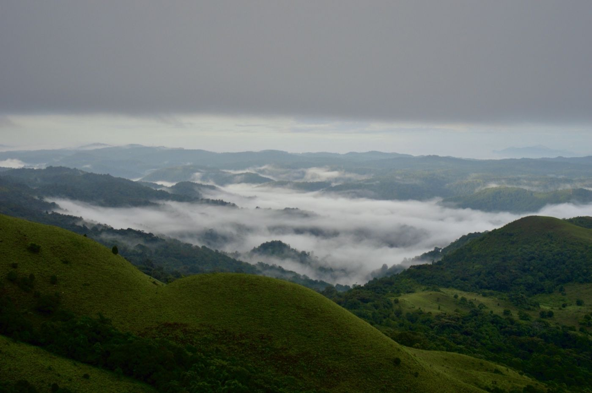

Devashish Juyal
Applied AI engineer. Data Scientist at Tech Observer.
I build AI systems that ship, from the model to the screen where someone decides whether to trust it. Lately that means agentic LLM workflows and privacy tooling for medical imaging. MS in ECE from the University of Michigan.
Open to applied AI / ML roles, anywhere in the US
Work
Data Scientist · Tech Observer
Multi-agent financial QA on LangGraph. Offline de-identification for DICOM and surgical video: 0.97 F1 on 1,693 CT images.
Research Assistant · University of Michigan
Sequential testing for LLM watermark detection, and learned change detection.
Data Scientist Co-op · Micron Technology
Fine-tuned LLaMA code generation (82% compile success) and equipment-drift monitoring (+0.5% yield).
Research Intern · MITACS, University of Alberta
XGBoost surrogate models for metamaterial design, about 95% predictive accuracy.
Research Intern · ISRO
CNN-LSTM models for radar signals, and beam-steering simulation analysis.
Projects
Agentic Adjudication
AI agents prepare clinical-trial adverse events for adjudication. Code checks every agent answer, and people sign.
AI operator release gate
Release suite and production monitor for an AI scheduling operator. It caught a flawed release in 10 of 10 trials, and demotes a release when production reviews turn bad.
Health-first voice onboarding
A nutrition app's 25-screen onboarding in 7. Apple Health fills the facts, Claude fills the rest from speech, and no health value reaches the model.
Sama4
News intelligence with semantic search, RAG and a real-time voice interface.
Inline
AI writing feedback for students, co-built with the founder.
MichiganSLM
Architecture and scaling experiments for Michigan's first small language model.
Sequential watermark detection
Anytime-valid tests that spot LLM watermarks in about 50 permutations instead of thousands.
Multi-stage distillation
7B → 1.5B → 0.5B with a teacher assistant: 22.8% lower perplexity than direct distillation.
Reading
Photography
I love photography: skies, skylines, and whatever the light is doing at either end of the day. Tap the photo for another one.
